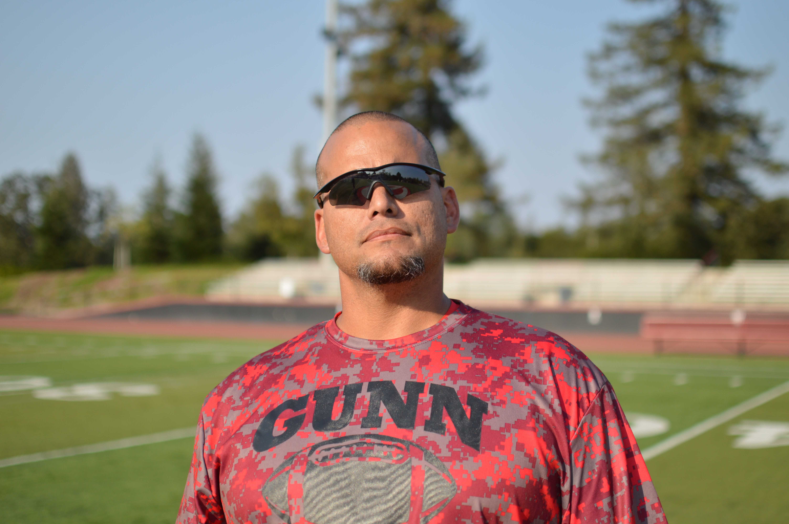

About Us
Founded by co-founders and Gunn High School students Alex Misra and Arda Turgut, Gunn Pickleball is dedicated to fostering a positive and inclusive atmosphere within the Gunn High School community. In a stressful academic environment, we believe that pickleball—a lightweight, fun, and community-driven sport—provides the perfect outlet for students. Our goal is to offer a space where everyone can unwind, whether through rallying with friends, playing competitive games, or just enjoying the game in a relaxed manner.
We emphasize the importance of building connections and friendships within the club, creating a supportive network for all members. Above all, we prioritize having fun. Whether you're a seasoned player or just looking to try something new, our club is a place to enjoy the sport without pressure. We also recognize the need to balance academic responsibilities with physical activity. Our club encourages an active lifestyle that complements school life, helping students manage stress and stay active.
Meet the Team

Ezra Rosenberg
Co-President
Ezra first played pickleball with a few family friends and quickly developed a love for the game. Besides pickleball, Ezra enjoys watching comedy movies, playing tennis, and unwinding with video games in his free time.

Richard De La Garza
Co-President
Richard discovered pickleball through a friend and quickly found joy in the game. He improved his skills by playing at Mitchell Park against more experienced opponents. Outside of pickleball, Richard enjoys music and volleyball and is proud of his growth in both skill and height.

Anders Lo
Secretary
Anders has loved pickleball for a while. As a weekly member of pickleball club, he’s extremely excited to finally be offered a position as secretary. Anders also loves baseball, Taylor Swift, baking, fantasy football, playing piano, journaling, and reading.

Rylan See
Treasurer
Rylan discovered pickleball through a group of friends and quickly found joy in the game. During his free time, Rylan enjoys watching comedy TV shows and playing basketball.

Mr. Weisman
Faculty Supervisor
Mr. Weisman has been the dedicated faculty supervisor for Gunn Pickleball since the start of the 2023 school year. He teaches U.S. History and brings an engaging, positive attitude to everything he does. Both on and off the court, his support has been instrumental in helping the club grow and thrive.